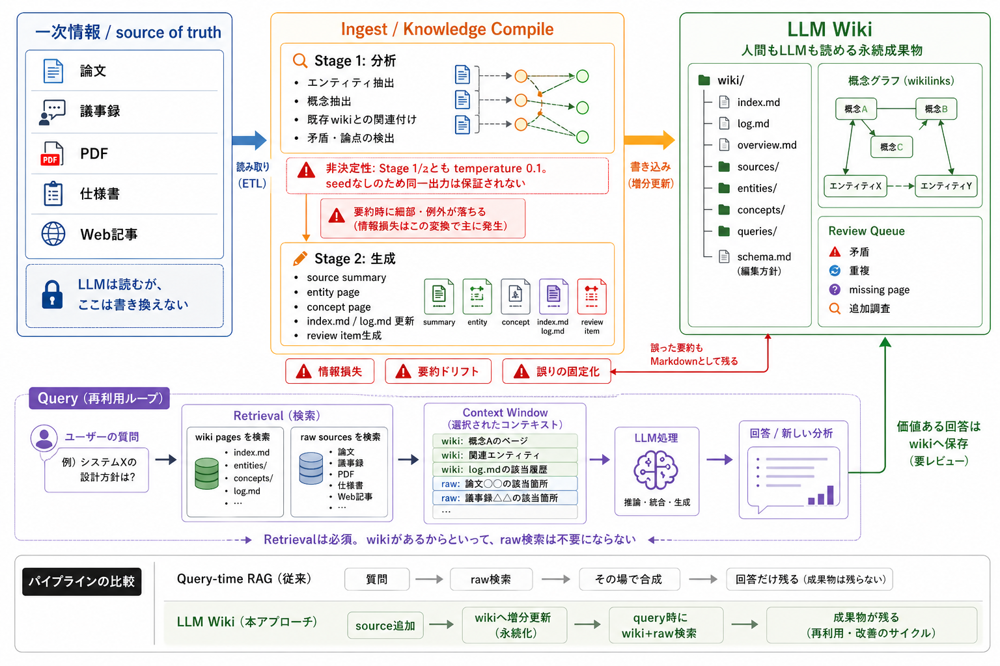

図で読むKarpathyのLLM Wiki：RAGを知識コンパイルへ変える発想と課題¶
対象 / ポイント
対象: RAGや長文コンテキストを使っているが、知識が会話に残らず再利用されない課題を感じている開発者・技術リード。
ポイント:
- LLM WikiはRAGを消すのではなく、rawをwikiへ増分コンパイルし、query時にwiki+rawを検索する設計。
- 中央のIngestは、Stage 1分析とStage 2生成で知識を永続成果物に変える。
- 弱点は明確で、情報損失、非決定性、Schema設計、検索問題は残る。
同じ資料や論文をLLMに読ませるたび、似た要約や比較表を作り直しているなら、その知識はまだ資産になっていない。 回答は出る。だが、次の質問に残らない。
Karpathyのllm-wiki.mdは、この問題を「モデルの記憶」ではなく、LLMが保守するMarkdown wikiで解く発想だ。2 nashsu/llm_wikiは、その発想をデスクトップアプリケーションとして実装したOSSである。1
この記事は、次の図を中心に読む。

この図の一番重要な点は、下段のQueryループだ。 LLM WikiはRAGを不要にしない。 raw sourcesをwikiへ増分更新し、次回の質問ではwiki pagesとraw sourcesの両方を検索する。
この記事の問いは1つだ。 LLM Wikiは何を解き、どの弱点を残すのか。
図の全体像：RAGを消さず、蓄積先を作る¶
図の上段は、source追加時の流れだ。 左のRaw Sourcesを読み、中央のIngestで分析・生成し、右のLLM Wikiへ書き込む。
図の下段は、質問時の流れだ。 ユーザーの質問に対して、wiki pagesとraw sourcesを検索し、選ばれた情報だけをContext Windowへ入れる。 LLMが回答や新しい分析を作り、価値があるものはwikiへ戻る。
従来のQuery-time RAGは、質問のたびにrawを検索し、その場で合成する。 LLM Wikiは、source追加時に合成の一部を前倒しし、成果物を残す。
| 観点 | Query-time RAG | LLM Wiki |
|---|---|---|
| 主な処理時点 | 質問された瞬間 | source追加時と質問時 |
| 残るもの | 回答、ログ、検索結果 | wikiページ、索引、ログ、review item |
| 強み | 速く始めやすい | 合成結果が再利用される |
| 弱み | 合成が毎回やり直し | 情報損失、非決定性、保守ルール |
ここで誤解してはいけない。 LLM Wikiは「RAGの上位互換」ではない。 検索した断片を、次回も使える外部成果物へ変える設計である。
左側：Raw Sourcesは最後までsource of truthである¶
図の左側にある論文、議事録、PDF、仕様書、Web記事は、LLMが読む一次情報だ。 ここはLLMが勝手に書き換えない。
この分離は重要だ。 wikiは便利な編集物だが、raw sourceそのものではない。 要約ページが間違っていれば、最後はrawへ戻って確認する必要がある。
条文、数値、契約文、実験条件のように細部が答えを左右する領域では、wikiだけで答えるべきではない。 wikiは地図であり、最終証拠ではない。
中央：Ingestは知識コンパイルだが、決定的ではない¶
図の中央は、LLM Wikiの肝であるIngest / Knowledge Compileだ。 nashsu/llm_wikiでは、このingestがStage 1（分析）とStage 2（生成）に分かれている。3
Stage 1では、LLMがsourceを読み、エンティティ、概念、既存wikiとの関連、矛盾や論点を抽出する。 Stage 2では、その分析をもとにsource summary、entity page、concept page、index.md、log.md、review itemを生成する。
この2段階化は合理的だ。 読みながら同時にwikiを書くより、まず構造を見てからページを作る方が、関係付けや矛盾検出を入れやすい。
ただし、この中央部分には3つの弱点がある。
- 情報損失: rawをsummaryやconcept pageへ変換する時点で、細部、例外、弱い反論は落ちる。
- 要約ドリフト: 別sourceをingestするたび、同じ概念ページの表現が微妙に変わり得る。
- 誤りの固定化: 誤った要約や曖昧なリンクがMarkdownとして残り、次回の前提になる。
生成の非決定性も避けられない。 nashsu/llm_wikiのingest実装では、Stage 1とStage 2のstreamChat呼び出しが、 どちらも{ temperature: 0.1 }を渡している。3 一方で、同じ呼び出しにseedパラメータは渡していない。
つまり、「同じsourceを100回入れたら同じwikiが100個できるか」と問うなら、 同一出力の保証はない。 同じプロジェクトで同じファイルを再投入する場合は、SHA-256ベースのcacheで再生成を避ける設計がある。4 しかしこれは同じ出力を再生成できる証明ではなく、再生成しないことでブレを抑える仕組みである。
LLM Wikiは、決定的な知識コンパイラではない。LLMが編集する生きた草稿である。
右側：LLM Wikiはファイル、グラフ、レビューで成り立つ¶
図の右側は、LLM Wikiが何を残すかを示している。 中心は、wiki/index.md、log.md、overview.md、sources/、 entities/、concepts/、queries/のようなMarkdownファイル群だ。
ここに概念グラフとReview Queueが乗る。 概念グラフはwikilinkでページ同士の関係を見るための層であり、Review QueueはLLMが判断を保留した矛盾、重複、missing page、追加調査を人間に返すための層である。
この右側をただの「自動要約集」にしないために、Schemaが必要になる。 Schemaは軽いプロンプトではなく、wikiの編集方針そのものだ。
最小限なら、Schemaにはこの程度の動詞を書く。
- ingest: rawの新規ファイルを読み、wiki/concepts/とwiki/entities/へ分割保存する
- query: wiki/index.mdから関連ページを引き、必要時だけraw sourceへ戻る
- lint: wikilink切れ、孤立ページ、出典欠落、古い主張を検出する
Schemaが緩すぎると、似た概念ページが増える。 Schemaが厳しすぎると、ingestのたびに判断が詰まる。 LLMが編集者になるほど、Schemaは品質を左右する。
nashsu/llm_wikiの実装は、この弱点をいくつか軽減している。 たとえば既存ページに新しいsourceが加わる場合、sourcesフィールドをマージして複数ソース由来の履歴を残す。5
ただし、守られるのは主に出典履歴だ。 ページ本文そのものは新しいLLM出力で置き換わり得る。 同じ概念ページが別sourceのingestのたびに微妙に書き直される可能性は残る。
下段：Queryではwikiとrawの両方を検索する¶
図の下段は、この方式を評価するうえで最も大事な部分だ。 LLM Wikiはretrievalを消さない。
質問が来たら、まずwiki pagesを検索する。 必要ならraw sourcesも検索する。 そのうえで、選ばれたwikiページ、rawの該当箇所、log.mdの履歴などをContext Windowへ入れる。
ここでLLMが推論、統合、生成をする。 価値ある回答や新しい分析はwikiへ保存できる。 ただし、ここも「そのまま保存」ではなく、レビュー対象にする方がよい。
この構図から、LLM Wikiの差別化が見える。 純粋な回答精度や検索性能だけなら、Graph RAG、re-ranking、長文コンテキスト、agentic searchも並ぶ。 LLM Wikiの強みは、人間もLLMも読める永続成果物が残ることだ。
逆に言えば、成果物を読み返さないならLLM Wikiの価値は薄い。 単発FAQならClassic RAGでよい。
どこから導入するか¶
LLM Wikiを使うかどうかは、情報量ではなく再利用頻度で決める。 少量の文書でも、何度も読み返し、比較し、更新するならwiki化の価値が出る。
もう1つの軸は、失ってよい情報量だ。 概要、関係、論点の地図が欲しいならLLM Wikiは向いている。 細部が答えを左右するなら、wikiは入口に留め、最終回答ではraw sourceへ戻るべきだ。
| 状況 | まず選ぶ設計 |
|---|---|
| 単発FAQが中心 | Classic RAGでよい |
| 同じ資料を何度も分析する | LLM Wikiを足す |
| 関係性や矛盾が重要 | wiki + graphを検討する |
| 同一出力が強く必要 | 自動wiki生成だけに任せない |
| rawの細部が重要 | wikiだけで答えずrawへ戻る |
最初からフル機能のデスクトップアプリケーションやナレッジグラフは要らない。 まずはraw/、wiki/index.md、wiki/log.md、ingest/query/lintのルールだけでよい。
まとめ：LLM Wikiは棚であり、棚卸しも必要である¶
LLM Wikiが投げている問いは、「RAGは古いか」ではない。 モデルが答えたあと、何が残るのか、である。
チャット履歴だけが残るなら、知識は会話に埋もれる。 検索結果だけが残るなら、次回も同じ合成をやり直す。 wiki、索引、ログ、出典、review itemが残るなら、次のLLMセッションはそこから始められる。
ただし、残るものが正しいとは限らない。 LLM Wikiは、知識を資産化する仕組みであると同時に、誤った編集を固定化する仕組みにもなる。
コンテキスト設計の焦点は、窓の大きさだけではない。 LLMが処理した知識を、検証可能な外部成果物へ変換できるかだ。 LLM Wikiの価値はそこにあり、弱点もそこにある。